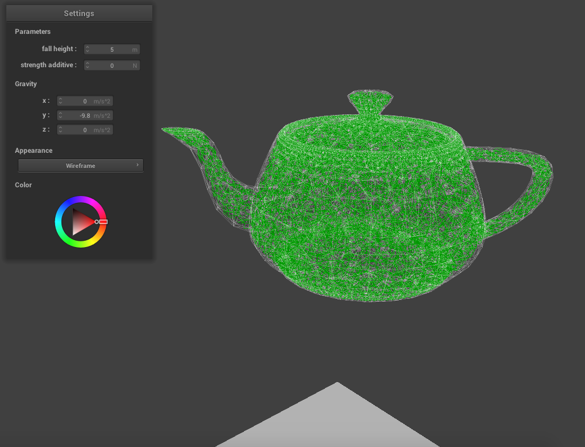
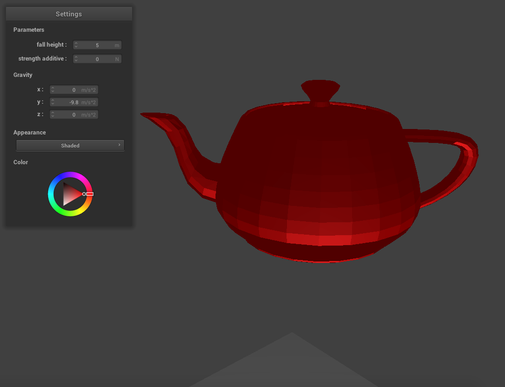

We used project 4 as our foundation and adapted it to work for our shattering simulation. The first thing we did was find a program online (tetgen) that takes a surface mesh and creates a solid 3D object of tetrahedrons. We used this on teapot.dae and this is what we are using as our model. Our model consists of tetrahedrons, which are comprised of triangles and vertices, and each tetrahedron has a constraint with each of its neighboring tetrahedrons. These constraints are similar in concept to springs from project 4, but they have a constant constraint value which is the distance between the centers of the two constrained tetrahedrons, and when we implement the shattering we will determine where the cracks occur by seeing if there is enough force on the constraint to break it. We make our object fall by using verlet integration (adapted from project 4) and when it intersects the plane (also code adapted from project 4) we stop the teapot there. This is now where we will run our shattering algorithm.
We have the Utah pot falling from a specified height and stopping when it hits the plane. It can be rendered with a wireframe, which shows the tetrahedron mesh as well as the constraints between the tetrahedrons (in green), or with normal shading.
|

|

|
Our original schedule was a bit too ambitious. We completed all of our week one goals, but we have only just started working on the
shattering algorithm. We also realized that getting the object to shatter and fall apart realistically would be incredibly difficult
because it requires simulating rigid bodies, so we are now aiming to just fracture the object and visualize the cracks. Getting the
pieces to fall apart is now a stretch goal.
Below is our updated timeline for the next two weeks:
Week 3:
Week 4:
Our presentation slides can be found here.